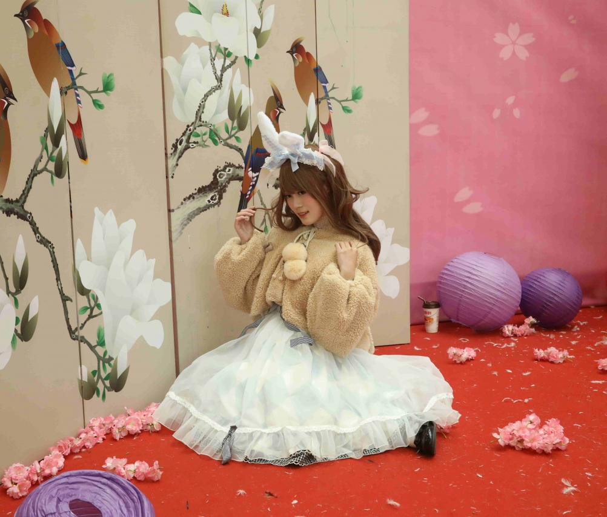
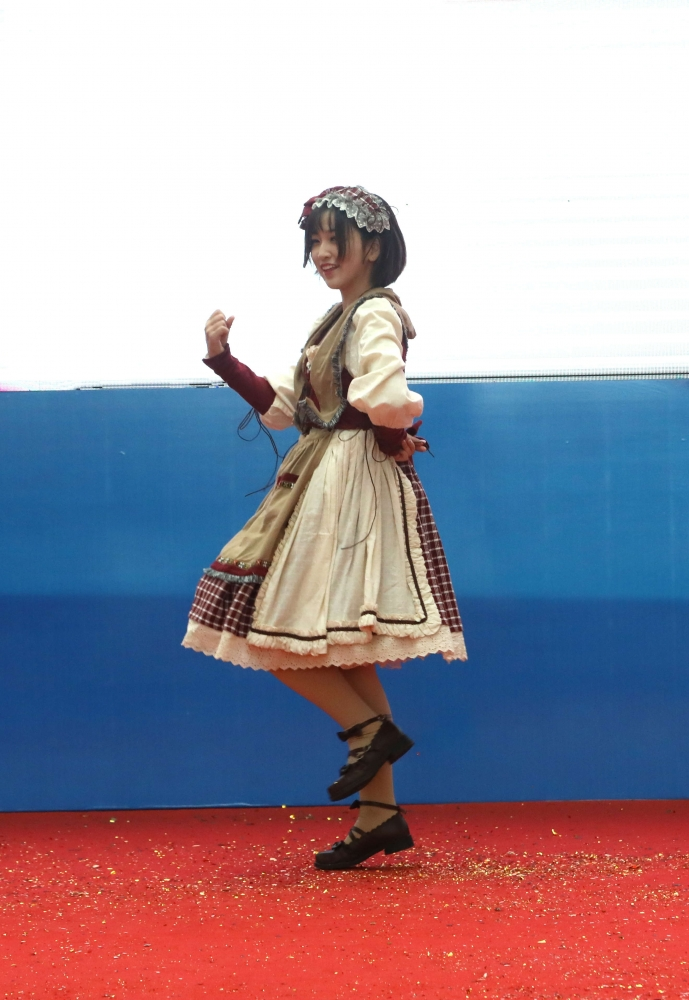

第五百三十五章 老娘可是恶魔啊
“迟到了！迟到了！迟到了！”
黑发的靓丽少女在大街上奔跑着的同时把一块面包片塞进了嘴巴里，如果是校园小说的桥段的话，叼着面包的少女大概会在某个转角与同样即将迟到的少年装个满怀，然后开启了少男少女们的青春物语，不过，少女的目的地已在眼前，宽阔的中央大道上很难制造转角的邂逅，而在少女的目的地，一名金发的少年看到少女的到来挥了挥手示意。
“哇——”
一声痛呼，一个少年从天而降，或许，青春的物语将以另一种形式打开。
少女的目光一凛，猛地的仰头向后一个空翻躲过天降的少年。
“啊！我的面包！”
翻完的少女要咽下嘴里剩下的一角面包后看着被少年压制身下的面包片不由的发出悲鸣。
“你没事吧，桐人？”名为优吉欧的少年跑了过来关心的问道。
“当然没事，只不过我的面包……”桐人惋惜的看着被衣着华丽的少年压在身下的面包。
“哝，这个是我给你留的早餐。”优吉欧无奈的笑了笑，然后把手上的面包递了过去，作为一同旅行近一年的同伴，少女那懒散的性格他是深有感触的，他猜到今天的考试桐人大概还是会踩着点来，说不定来不及吃早饭，所以，他特意为桐人准备了一点。
“真的的太好了！优吉欧！”桐人一手高举着优吉欧友情赞助的面包，一手以哥两好的搂着优吉欧的肩膀赞叹到。
“不要这样，桐人！”优吉欧为难的挣脱开桐人的手说道。对于桐人的洒脱个性，他也很无奈，明明是个女生，却完全不知道矜持为何物，整天就像是个男生一样大大咧咧的。
“哈哈，优吉欧害羞了！”桐人咯咯咯的笑了起来。
“你啊，可是女生啊，要矜持一些！”优吉欧板着脸对自己的友人兼剑术老师的少女训斥道。
“嗨！嗨！嗨！”桐人应付的点了点头。
来到这个世界已经快要一年了，从最初的不适应，到现在，她也差不多习惯了作为女性的身份，甚至，调侃优吉欧成为了她如今在这个世界为数不多的乐趣之一。
桐人不明白自己为什么会来到这个世界，她记不清楚来到这个世界之前发生了什么，隐约是记得，她们一起在艾基尔的店里聚会，聚会结束后，她送她们一一回家，然后……
记忆到此就中断了。
想不起来自己是和她们怎样分别的，自己回到车站了吗，到家是几点，几时入睡，完全记不起来。
这里是哪里？
假想世界？但是，这份真实……
传入鼻腔的空气，蕴含着大量的信息，花朵的芳香气息，绿草的味道，如同洗净心胸般爽快的树木的味道。刺激着干渴喉咙的水的气息。
意识转移到听觉之上，便听到了大量的声音如同洪水般涌来。无数的树叶相互摩擦的音符。小鸟充满朝气的歌唱声。以及待在树下如同奏鸣一样的虫之羽音。以及从远处传来的小河那微微的汩汩声。
明明她前一天应当应该是抵达了世田谷区宫坂市，但不知道为什么，她又会独自一人躺在这个陌生的森林内。
微风拂过肌肤让她感觉很舒服，六月末的热气，在这片森林完全不存在。
一股真正的战栗在脊背处游走。
错乱的体感让她不由的怀疑，记忆里的那真的是在昨天吗？
错乱的不只是体感温度，还有她的身体！
她是——她的名字是，桐之谷和人，十七岁八个月，和母亲与妹妹三人共同生活在琦玉县川越市，并且、并且她应当是个男、男生才对？
在确认自己的性别的同时，桐人的心中略感不确定，在记忆里，她小时候被母亲打扮的漂漂亮亮的，然后和妹妹一同出门，虽然只有为数不多的几次，在与儿时记忆相比不算久的半年前，她还和诗乃一起去买过衣服……
她真的是男生吗？
在潜意识的认同感与记忆的冲突下，桐人就像是在下起暴风雨的海面上，紧紧抱着一只小小的救生圈的人，她的记忆究竟是不是真的？她，到底是不是真正的桐人……？
如此浑浑噩噩的，她在森林里游荡。
这里不是假想世界，当时，她是如此断定的，这个世界的一切，在她的记忆之中，是不论是哪种超级电脑，都无法生成如此高清晰的3D模型群。
也就是说，她可能是穿越到了某个异世界，并且变身了！
在电击文库的作品，漫画，小说，动画中，这都是稀疏平常的事情。按照勇者斗恶龙的剧情，她之后可能要去倾听村长的委托，救助被怪物袭击的女生，成为与魔王战斗的救世主吧。
不过，她的腰间却没有一把铜剑……
除了穿越这种事之前，其实也存在着这确实是假想世界这一可能性，不过，如此的话，在她丧失记忆期间，现实世界已经过了数年，甚至是数十年的时间，这是桐人无论如何都无法接受的。
真的被卷入异世界，或者时间已经过去了数十年的话，桐人宁愿她是被卷入了某种恶性 事件之中，她看过类似的故事，有钱人会为了满足自己的变态欲望，在私底下做一些可怕的事情，比如，把欠他们钱的人抓起来，在豪华游轮上用包括性命在内一切赌注去夺取最后的辉煌，有或者是，抓一帮无辜的人扔到荒岛上，分给他们的不同的武器让他们彼此厮杀，直到剩下最后一个就能回家。
想到在有钱人的游戏里失败的下场，桐人一个哆嗦：“也许还是被卷入异世界更好一点吧！”
毕竟电击文库里去往异世界的主角，很多最后都能回到地球。
在胡思乱想中，桐人在那个树林里遇到了名为优吉欧的金发少年，
看见优吉欧打开了所谓的丝提西亚之窗的同时，桐人也打翻了之前对于这个世界的种种猜测，这里，是假想世界！！！
她终于想起来了！
她参加了一个叫拉斯的风投公司的实验，而那个实验的内容，就是测试新型完全潜行技术，那个技术能利用被命名为Fluctlight【布拉克特之光】的东西创造出难辨真假的假想世界，并且，这个技术还能做到屏蔽使用者的部分记忆。
也就是说，她在被屏蔽的记忆中的某个时间，继续了那个实验！
虽然已经做出了这样的判断，但是完全无法联系上GM，联系上这个实验的研究员比嘉先生的情况还是让桐人感到不安。
除了这个世界的真相之外，桐人还想起来曾经有人对她说过，【THE SEED】对她的脑波做了特别的标记，只要是基于【THE SEED】开发的假想世界，她都会被识别为女性进行登录，也就是说，她确实是男性才对！
为了纠正自己的性别，以及想办法联系上外部的研究员们，桐人积极的鼓励优吉欧和她一起前往央都斯托蕾雅，以成为整合骑士为手段，帮助她见到可能是外部管理员马甲的最高祭司。
……
【卡了N久之后，心中沉重的欲望还是逼迫我对桐人动了手。nice。此处可有推荐？可有掌声？】
【昨天去了漫展，很遗憾，我并没有突破自己，只是拍了拍舞台，顺便曾拍而已，上次好歹是邀拍一个，这次，完全没有邀拍】